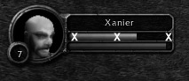

{% include JB/setup %}
{% raw %}
<div>
<a name="toppage" class="pcalibre calibre1"></a><table width="100%" border="0" cellspacing="0" cellpadding="0" class="sfbody"><tr valign="top" class="calibre2"><td class="calibre3"><a name="MainContent" class="pcalibre calibre1"></a><table width="95%" class="sfbody"><tr class="calibre2"><td class="pcalibre1 v"><!--Copyright (c) 2002 Safari Tech Books Online--><table width="100%" border="0" cellspacing="0" cellpadding="2" class="calibre4"><tr class="calibre2"><td valign="middle" class="v1 pcalibre1" height="5"></td></tr><tr class="calibre2"><td valign="middle" class="v1 pcalibre1"><table cellpadding="0" cellspacing="0" border="0" width="100%" class="calibre4"><tr class="calibre2"><td class="calibre6"><span class="calibre7"> </span>
                   
                  <span class="calibre7">   </span>
             <span class="calibre7"> </span></td></tr></table></td><td class="calibre8"/><td valign="middle" class="v2 pcalibre1"> 
           
          <span class="calibre7"><a target="_self" href="ch06lev1sec4.html" title="Previous section" class="pcalibre calibre1"></a></span>
				
				 
				
				<span class="calibre7"><a target="_self" href="ch06lev1sec6.html" title="Next section" class="pcalibre calibre1"></a></span></td></tr></table><div id="section" class="calibre15"><table width="100%" border="0" cellspacing="0" cellpadding="0" class="calibre4"><tr class="calibre2"><td valign="top" class="calibre8"><a href="10061538.html" class="pcalibre calibre1"></a>Security Game Programming Networking Programming Greg Hoglund Gary McGraw Addison Wesley Professional Exploiting Online Games: Cheating Massively Distributed Systems<a name="ch06lev1sec5" class="pcalibre calibre1"></a>
<h3 id="title-IDAEIDHP" class="docSection1Title">Going Over the Game: Controlling the User Interface</h3>
<p class="docText">In <a class="pcalibre6 pcalibre5 calibre1" href="ch02.html#ch02">Chapter 2</a>, we present a very simple farming game bot that works by interacting with the WoW client interface. This is an extremely common technique and is thus worth another quick look. Refer back to <a class="pcalibre6 pcalibre5 calibre1" href="ch02.html#ch02">Chapter 2</a> if you need a more introductory explanation of what's going on here.</p>
<p class="docText">The basic idea for getting over the game is to send events to the game client as if the events themselves were coming from the PC. That is, you can send messages to the client that look to it like normal keystrokes, mouse events, or other game-specific messages. This type of utility is sometimes called a <span class="docEmphasis">macro</span>. There are many macro programs available that can post mouse and keyboard events to the screen. Instead of showing you other people's macro programs, we show you how to write your own. What follows are some easy examples to get you started.</p>
<a name="ch06lev2sec7" class="pcalibre calibre1"></a>
<h4 id="title-IDADJDHP" class="docSection2Title">Controlling Keystrokes</h4>
<p class="docText">The first example involves sending keyboard events to the game client just as if we were typing directly on the keyboard. This is important since this can be used to move your game character, click on hotkeys for actions and events, and even type into a chat window.</p>
<p class="docText">Here is a snippet of source code that posts a keystroke to the computer. This is handled globally and will post the keystroke regardless of which window is in the foreground or which application is running. This technique is commonly used by macro programs. Many game hacking and macro scripts use basic keyboard and mouse events to interact with the game <a name="iddle1614" class="pcalibre calibre1"></a><a name="iddle1679" class="pcalibre calibre1"></a><a name="iddle2204" class="pcalibre calibre1"></a><a name="iddle2207" class="pcalibre calibre1"></a>client. The side effect of using this technique is that you can't use the computer for anything else while you are doing your botting because this technique basically takes over the user interface while it runs.</p>
<div class="docText1"><pre class="calibre43">DWORD PostKeystroke(
       BYTE theScanCode,
       DWORD theTime)
{
       keybd_event(
               theScanCode,
               MapVirtualKey(theScanCode, 0), 0, 0);
       Sleep(theTime);
       keybd_event(
               theScanCode,
               MapVirtualKey(theScanCode, 0), 0 |
                     KEYEVENTF_KEYUP, 0);
       return 0;
}
</pre></div><br class="calibre15"/>
<p class="docText">This code snippet uses the API call <tt class="calibre38">keybd_event( )</tt>. This call takes the virtual scan code for the key you want to press. This is not the same thing as the ASCII code. The character you want to press needs to be mapped to its respective scan code before you use this API function.</p>
<a name="ch06lev2sec8" class="pcalibre calibre1"></a>
<h4 id="title-IDA3KDHP" class="docSection2Title">Using Magic Key Sequences</h4>
<p class="docText">WoW has a character class known as Paladin—quite possibly one of the most difficult classes to play in the game.<sup class="docFootnote"><a class="pcalibre6 pcalibre5 calibre1" href="#ch06fn03">[3]</a></sup> The key to playing this class is the proper ordering of actions to maximize damage or to preserve mana (an in-game energy rating of sorts). The game offers hotkeys that can be linked to actions for your character. So, one kind of macro might be designed to execute a series of actions to maximize the effectiveness of the Paladin character. Such a sequence might go like this:</p><blockquote class="calibre24"><p class="docFootnote1"><sup class="calibre31"><a name="ch06fn03" class="pcalibre calibre1">[3]</a></sup> We know that everyone has their own opinions on matters such as these; this is just our own studied opinion.</p></blockquote>
<blockquote class="calibre24">
<p class="docText">F1 key: cast spell Sanctity Aura—increases Holy Damage</p>
<p class="docText">F2 key: cast spell Seal of Holy Might</p>
<p class="docText">F3 key: cast spell Judgement</p>
<p class="docText">F4 key: cast spell Seal of Command</p>
<p class="docText"><a name="iddle1771" class="pcalibre calibre1"></a><a name="iddle1772" class="pcalibre calibre1"></a><a name="iddle2210" class="pcalibre calibre1"></a>F5 key: cast spell Hammer of Justice</p>
<p class="docText">F6 key: cast spell Crusader Strike</p>
</blockquote>
<p class="docText">There are a total of six key bindings set up. Now, using these keys in the correct order and timing could result in the following:</p>
<blockquote class="calibre24">
<p class="docText">Begin fighting . . .</p>
<p class="docText">F1—F2—F3—F4</p>
</blockquote>
<p class="docText">Wait 15 seconds while fighting</p>
<blockquote class="calibre24">
<p class="docText">F5—F3—F4</p>
</blockquote>
<p class="docText">Continue fight for 15 more seconds, if target still alive, then</p>
<blockquote class="calibre24">
<p class="docText">F5—F3—F4</p>
</blockquote>
<p class="docText">Repeat above as timers allow</p>
<p class="docText">Obviously, that's a lot of keystrokes. At the time of this writing, this sequence would first cast a Sanctity Aura, increasing damage output. Then, the Seal of Holy Might is cast, which is then immediately Judged—effectively placing a curse that makes your opponent take extra damage for a period of time. Next, a Seal of Command is cast, and fighting continues. This spell causes even more damage, and then a Hammer of Justice stuns the target opponent. Next, another Judgement causes a burst of damage that is enhanced by the fact that the opponent is also stunned. The character repeats this sequence as long as the fight is on.</p>
<p class="docText">Variations of these kinds of techniques abound, but this gives you an idea of the kind of analysis you can perform up front to engineer your macro for maximum effectiveness. Your mileage may vary.</p>
<a name="ch06lev2sec9" class="pcalibre calibre1"></a>
<h4 id="title-IDAYNDHP" class="docSection2Title">Controlling Mouse Droppings</h4>
<p class="docText">We can cause the same effect with the mouse because, just like a keyboard, the mouse generates events as you use it. By sending these events to the game client, we can make it believe that a user is wielding the mouse.</p>
<p class="docText">The following source code snippet illustrates use of the <tt class="calibre38">mouse_event</tt> API call with some inline commentary.</p>
<div class="docText1"><pre class="calibre43">DWORD LMouseClick(DWORD x, DWORD y, bool shift)
{
       int ix,iy;
</pre></div><br class="calibre15"/>
<p class="docText"><a name="iddle1621" class="pcalibre calibre1"></a>This code gets the width and height, in pixels, of the monitor or screen.</p>
<div class="docText1"><pre class="calibre43">       ix=GetSystemMetrics(SM_CXSCREEN);
       iy=GetSystemMetrics(SM_CYSCREEN);</pre></div><br class="calibre15"/>
<p class="docText">This code converts the client coordinates of the foreground window to screen coordinates, letting you move the game client window around—thereby avoiding the annoying problem of having to align the game client screen to the upper left corner of the monitor. Some macro programs require this, but here we show you how to avoid that annoyance.</p>
<div class="docText1"><pre class="calibre43">       POINT p;
       p.x = x;
       p.y = y;
       ClientToScreen(GetForegroundWindow(), &amp;p);
</pre></div><br class="calibre15"/>
<p class="docText">The <tt class="calibre38">mouse_event</tt> call requires you to specify the coordinates in <span class="docEmphasis">mikeys</span>—the screen is divided into 65,536 (16 bits) mikeys for both x- and y-coordinates—so the upper left is (0,0) and the lower right is (65535, 65535).</p>
<div class="docText1"><pre class="calibre43">       DWORD mikeysX = p.x * 65535 / ix;
       DWORD mikeysY = p.y * 65535 / iy;
</pre></div><br class="calibre15"/>
<p class="docText">This sets the mouse position on the screen.</p>
<div class="docText1"><pre class="calibre43">       mouse_event(
              MOUSEEVENTF_ABSOLUTE | MOUSEEVENTF_MOVE,
              mikeysX,
              mikeysY,
              0, 0);</pre></div><br class="calibre15"/>
<p class="docText">If you want, you can specify that the shift key is pressed before the mouse event. This is useful, for example, when you need to shift-right-click to auto-loot a bag and so on.</p>
<div class="docText1"><pre class="calibre43">       if(shift)
       {
              keybd_event(
                     VK_LSHIFT,
                     MapVirtualKey(VK_LSHIFT, 0), 0, 0);
</pre></div><br class="calibre15"/>
<p class="docText"><a name="iddle1606" class="pcalibre calibre1"></a><a name="iddle1832" class="pcalibre calibre1"></a><a name="iddle2203" class="pcalibre calibre1"></a><a name="iddle2214" class="pcalibre calibre1"></a>The sleep here is optional; you may want to experiment with your target game.</p>
<div class="docText1"><pre class="calibre43">            //Sleep(20);
       }
</pre></div><br class="calibre15"/>
<p class="docText">You can substitute a parameter here to make this a right click instead of a left click. Look up the documentation on <tt class="calibre38">mouse_event</tt> to see all the available options.</p>
<div class="docText1"><pre class="calibre43">       mouse_event(MOUSEEVENTF_LEFTDOWN, 0, 0, 0, 0);
       //Sleep(20);
       mouse_event(MOUSEEVENTF_LEFTUP, 0, 0, 0, 0);
       //Sleep(20);
</pre></div><br class="calibre15"/>
<p class="docText">If we used the shift, let's put it back now.</p>
<div class="docText1"><pre class="calibre43">       if(shift)
       {
              keybd_event(
                     VK_LSHIFT,
                     MapVirtualKey(VK_LSHIFT, 0), 0 |
                           KEYEVENTF_KEYUP, 0);
              //Sleep(20);
       }
       return 0;
}
</pre></div><br class="calibre15"/>
<p class="docText">As you can see, wielding the mouse is just as automatic and easy as wielding the keyboard. This is a classic technique that's as old as the hills.</p>
<a name="ch06lev2sec10" class="pcalibre calibre1"></a>
<h4 id="title-IDAUSDHP" class="docSection2Title">Sampling Pixels</h4>
<p class="docText">So you know how to post mouse and keyboard events. How do we also get feedback from the game? For example, what if we want to know the health of a character or of a target opponent? You can learn many things by reading pixel colors from the screen. For example, health bars are typically red and located at a specific place on the screen. If you sample pixel colors from this area, you should be able to tell what value is present on the on-screen health indicator. You can use pixel sampling for a plethora of things, of course; this is just one example.</p>
<p class="docText">The following code snippet illustrates how to determine the color of a pixel:</p>
<div class="docText1"><pre class="calibre43">COLORREF GetColorOfPixel(DWORD x, DWORD y)
{
       HWND hWnd   = GetForegroundWindow();
       HDC hDC     = GetDC(hWnd);
       COLORREF cr = GetPixel(hDC, x, y);
       ReleaseDC(hWnd, hDC);
       return cr;
}
</pre></div><br class="calibre15"/>
<p class="docText"><a name="iddle1163" class="pcalibre calibre1"></a><a name="iddle1348" class="pcalibre calibre1"></a><a name="iddle1663" class="pcalibre calibre1"></a><a name="iddle1671" class="pcalibre calibre1"></a><a name="iddle2206" class="pcalibre calibre1"></a>The code first gets the topmost window—which will be the game's client window since it must be topmost (and in focus) in order to interact with your keystroke and mouse messages. This works if the game is in windowed mode as opposed to full-screen mode. Most games support windowed mode. The <tt class="calibre38">COLORREF</tt> will have values for red, blue, and green, and these can be used to deduce any color.</p>
<p class="docText"><a class="pcalibre6 pcalibre5 calibre1" href="#ch06fig11">Figure 6-11</a> shows an example technique for checking the health, mana, or other information displayed in bars on the WoW interface.</p>
<a name="ch06fig11" class="pcalibre calibre1"></a><p class="calibre28"><center class="calibre29">
<h5 class="docFigureTitle">Figure 6-11. By sampling pixel color at the locations on the bar marked with an X, you can keep track of health, mana, and other information displayed as bars on the WoW interface.</h5>
</center></p><p class="docText">
</p>
<br class="calibre15"/>
<p class="docText">A botting or combat assist program can sample the colors at the locations indicated on the screen. Given a few samples, the botting program can determine whether the character is at full, medium, or low health. See the simple bot in <a class="pcalibre6 pcalibre5 calibre1" href="ch02.html#ch02">Chapter 2</a> for an example.</p>
<a name="ch06lev2sec11" class="pcalibre calibre1"></a>
<h4 id="title-IDABWDHP" class="docSection2Title">Countermeasures against Macro Bots</h4>
<p class="docText">Macro-botting programs have one advantage over other types of botting programs—they are easy to understand and build. That's why they are particularly popular. They also have the advantage that they don't manipulate the game's program memory at all, so the game won't be able to detect that it's being hacked. In fact, a macro program such as this is hardly a hack at all—it's merely simulating a real player by pressing keys and clicking the mouse. Game programs that hope to catch players using macro programs <a name="iddle1583" class="pcalibre calibre1"></a><a name="iddle1887" class="pcalibre calibre1"></a><a name="iddle1897" class="pcalibre calibre1"></a><a name="iddle2212" class="pcalibre calibre1"></a><a name="iddle2217" class="pcalibre calibre1"></a><a name="iddle2289" class="pcalibre calibre1"></a><a name="iddle2297" class="pcalibre calibre1"></a>like this must resort to scanning the processes and window names on the system. This might seem like a violation of privacy (and we believe it is), but it's the only way games can hope to detect macro programs at this level.</p>
<p class="docText">Macro programs like this aren't used just for games like WoW. They are also used for online poker, and in poker games there is often a lot of money at stake. Programs can automatically play cards just as easily as they can drive a Paladin in a fantasy world. In the case of the popular online poker site PartyPoker.com, rumor has it that the game producers resort to taking full screenshots of your computer monitor, including everything visible at the time the shot is taken, and sending those shots home for analysis. Talk about an invasion of privacy!</p>
<a name="ch06lev3sec10" class="pcalibre calibre1"></a>
<h5 id="title-IDAGYDHP" class="docSection3Title">Hiding from Process Lists</h5>
<p class="docText">Some games read your PC's process list in hopes of finding a known macro program, such as the AC Tool or something similar. This doesn't work very well because it is trivial to rename your process to something else. Simply rename the .exe file before launching it.</p>
<p class="docText">Sometimes scanning a process list is used for more than just determining process names—it is also used to find processes for subsequent memory scans. In this case, renaming the .exe isn't going to work. You need to hide the process entirely. This can be accomplished by using a rootkit.<sup class="docFootnote"><a class="pcalibre6 pcalibre5 calibre1" href="#ch06fn04">[4]</a></sup> Hiding a program is simple—simply download the easy-to-use and popular FU rootkit from &lt;<a class="pcalibre6 pcalibre5 calibre1" target="_blank" href="http://www.rootkit.com">http://www.rootkit.com</a>&gt;. Running FU will allow you to hide a process.</p><blockquote class="calibre24"><p class="docFootnote1"><sup class="calibre31"><a name="ch06fn04" class="pcalibre calibre1">[4]</a></sup> <span class="docEmphasis">Rootkits: Subverting the Windows Kernel</span> by Greg Hoglund and James Butler (Addison-Wesley, 2005) is the definitive text on this technology.</p></blockquote>
<a name="ch06lev3sec11" class="pcalibre calibre1"></a>
<h5 id="title-IDADZDHP" class="docSection3Title">Changing Window Names</h5>
<p class="docText">Another method games use to scan for botting software is to read the text of all open windows. If you suspect your target game is doing something like this, you may want to download the tool called the Governor (which we introduce in <a class="pcalibre6 pcalibre5 calibre1" href="ch02.html#ch02">Chapter 2</a>) from the book's Web site or at &lt;<a class="pcalibre6 pcalibre5 calibre1" target="_blank" href="http://www.rootkit.com/vault/hoglund/Governor.zip">http://www.rootkit.com/vault/hoglund/Governor.zip</a>&gt;. This tool will inform you if the game is attempting to read memory of processes and/or window texts.</p>
<p class="docText">To defeat window texts, simply randomize the names of your windows so they can't be trivially fingerprinted.</p>
<a name="ch06lev3sec12" class="pcalibre calibre1"></a>
<h5 id="title-IDA5ZDHP" class="docSection3Title">Wielding Rootkits for Stealth</h5>
<p class="docText"><a name="iddle1243" class="pcalibre calibre1"></a><a name="iddle1575" class="pcalibre calibre1"></a><a name="iddle1700" class="pcalibre calibre1"></a><a name="iddle2030" class="pcalibre calibre1"></a><a name="iddle2169" class="pcalibre calibre1"></a><a name="iddle2208" class="pcalibre calibre1"></a><a name="iddle2213" class="pcalibre calibre1"></a><a name="iddle2276" class="pcalibre calibre1"></a>The most powerful form of botting stealth can be obtained by using rootkits. Rootkits are programs designed to hide other programs and data on a computer. Rootkits are not intrinsically bad; they are just tools and, like any tool, they can be used by bad guys or good guys. For game hacking, rootkits are particularly useful. More information on how rootkits can be used to hide botting programs is given later.</p>
<a name="ch06lev2sec12" class="pcalibre calibre1"></a>
<h4 id="title-IDAH2DHP" class="docSection2Title">Generating Windows Messages</h4>
<p class="docText">Of course, games always have messages specific to the game. If you can generate these messages and get them to the game client, you can in some sense manipulate the game client right through the front door.</p>
<a href="10061538.html" class="pcalibre calibre1"></a><ul class="calibre18"></ul></td></tr></table><table width="100%" border="0" cellspacing="0" cellpadding="2" class="calibre4"><tr class="calibre2"><td valign="middle" class="v1 pcalibre1" height="5"></td></tr><tr class="calibre2"><td valign="middle" class="v1 pcalibre1"><table cellpadding="0" cellspacing="0" border="0" width="100%" class="calibre4"><tr class="calibre2"><td class="calibre6"><span class="calibre7"> </span>
                   
                  <span class="calibre7">   </span>
             <span class="calibre7"> </span></td></tr></table></td><td class="calibre8"/><td valign="middle" class="v2 pcalibre1"> 
           
          <span class="calibre7"><a target="_self" href="ch06lev1sec4.html" title="Previous section" class="pcalibre calibre1"></a></span>
				
				 
				
				<span class="calibre7"><a target="_self" href="ch06lev1sec6.html" title="Next section" class="pcalibre calibre1"></a></span></td></tr></table><table width="100%" border="0" cellspacing="0" cellpadding="2" class="calibre4"><tr class="calibre2"><td valign="top" class="calibre14"><span class="calibre7"></span></td></tr></table></div><!--IP User 2--></td></tr></table></td><td class="calibre3">
                         
                      </td></tr><tr class="calibre2"><td colspan="3" valign="bottom" class="calibre3"><br class="calibre15"/><p class="v5 pcalibre1"></p><br class="calibre15"/></td></tr></table></div>

{% endraw %}

